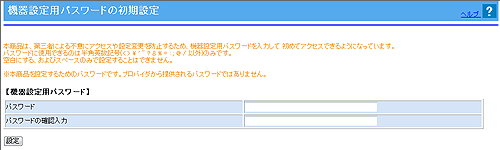
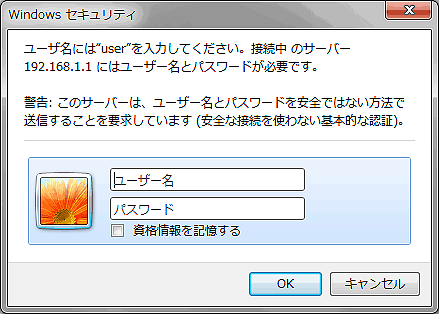
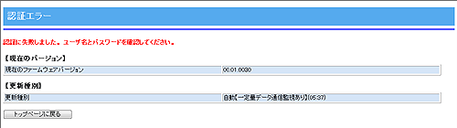
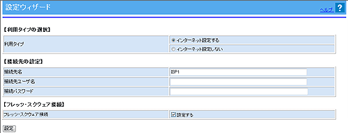

| 1. | 本商品とパソコンが接続されていることを確認する |
|---|---|
| 2. | パソコンを起動する |
| 3. | Webブラウザを起動する |
| 4. | 本商品の「Web設定」を開く Webブラウザのアドレスに「http://ntt.setup/」と入力後、パソコンの「Enter」キーを押します。 アドレスには、本商品のIPアドレス(工場出荷時は192.168.1.1)を入力しても同じです。 |
| 5. | 本商品の初期設定を行う （2回目以降のログイン時は、手順6に進みます） |
| 機器設定用パスワードを設定する このパスワードは、忘れないように控えておきましょう。 「パスワード」、「パスワード再入力」欄にパスワードを入力し、［設定］をクリックしてください。 パスワードには32文字以内の半角英数字および記号が使用できます。 ただし、< > \ ’ ” ? & % = : ; @ / は使用できません。 大文字と小文字は区別されます。また、空白にする、およびスペースのみで設定することはできません。 |
|
| ※「Web設定」画面に表示されているボタンについての説明は こちら | |
|  | |
＜お知らせ＞
|
＜ご注意＞
|
| 6. | ユーザ名には“user”、パスワードには 手順 5. で設定した機器設定用パスワードを入力して［OK］をクリックする （2回目以降のログイン時は手順8に進みます） |
|
|---|---|---|
|  ※ご使用のWebブラウザやOSのバージョンによって画面表示は異なりますが、入力が必要な項目は同じです。 ※ユーザー名、パスワードが間違っていた場合は認証エラー画面が表示されます。［トップページに戻る］をクリックして再度入力し直してください。 ※ご利用の環境によっては表示されない場合があります。  |
||
| 7. | 「設定ウィザード」に接続に必要な設定を行い、［設定］をクリックする |
|  | |
| ＜お知らせ＞ −サービス情報サイト接続の項目で、「設定する」を選択した場合−
|
| 8. | 「web設定」のトップページが表示されることを確認する |
| 本商品のメニューは階層化されています。 左側に（プラス）マークがあるメニューをクリックすると、メニューの小項目が表示されます。 |
||
＜お知らせ＞
|
 （マイナス）マークに変わります。
（マイナス）マークに変わります。
| 「Web設定」を起動すると「トップページ」が表示されます。 ここでは、各項目の概要を説明します。 |
||||||||||||||||||||||||||||||||||||||||||||||||||||||||||||||||||||||||||||||||||||||||||||||||||||||||||||||||||||||||||||||||||||||||||||||||||||||||||||||
 |
||||||||||||||||||||||||||||||||||||||||||||||||||||||||||||||||||||||||||||||||||||||||||||||||||||||||||||||||||||||||||||||||||||||||||||||||||||||||||||||
| 設定項目を選択します。 | ||||||||||||||||||||||||||||||||||||||||||||||||||||||||||||||||||||||||||||||||||||||||||||||||||||||||||||||||||||||||||||||||||||||||||||||||||||||||||||||
|
||||||||||||||||||||||||||||||||||||||||||||||||||||||||||||||||||||||||||||||||||||||||||||||||||||||||||||||||||||||||||||||||||||||||||||||||||||||||||||||
| 設定が終わったら、［設定］をクリックし、本商品に設定値を書き込みます。 |
＜お願い＞
|